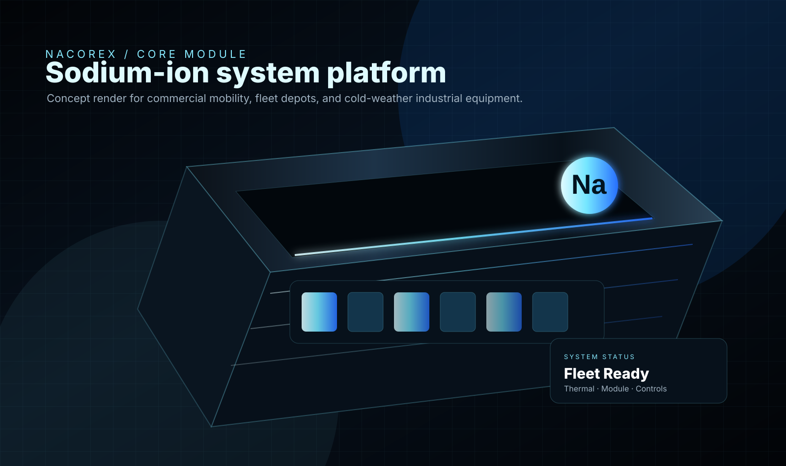
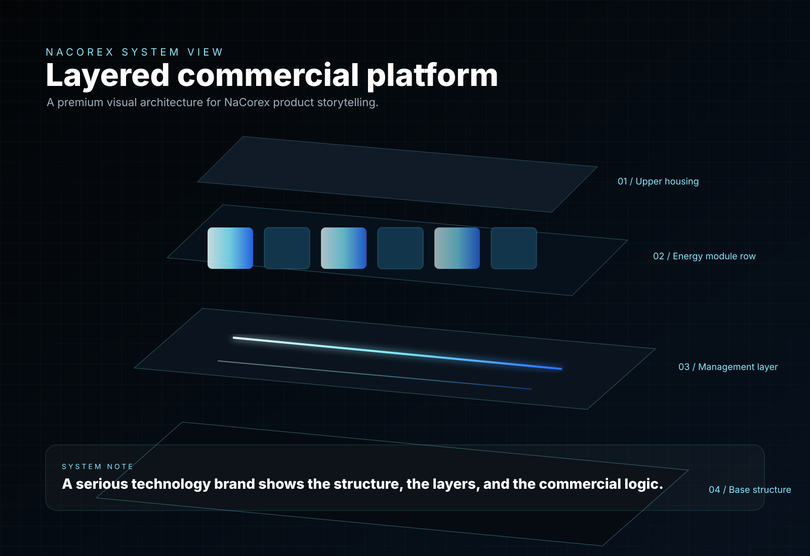
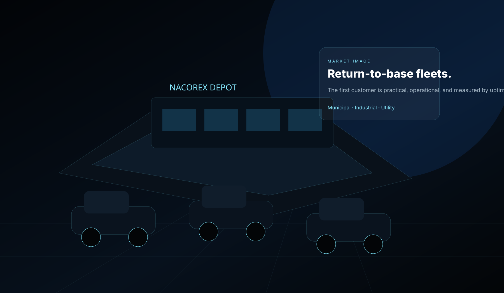
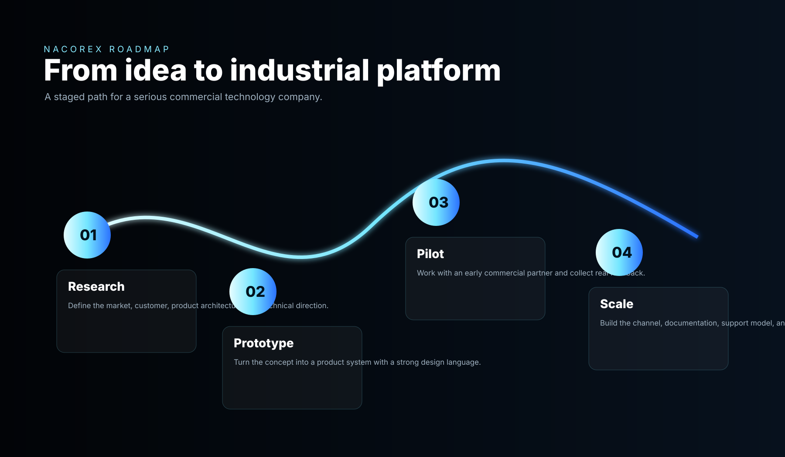

Core chemistry
Sodium-ion positioning gives the company a distinct story in cost, materials, and fleet-market suitability.
Industrial sodium-ion mobility
NaCorex is a cold-weather energy systems company focused on sodium-ion platforms for commercial fleets, industrial mobility, municipal operators, and return-to-base vehicle programs.

Designed around commercial duty cycles, not luxury performance theater.
The product is the integrated platform: monitoring, packaging, service model, and deployment.
Northern conditions are treated as the design environment, not an edge case.
Sodium-ion gives NaCorex a different supply-chain and cost narrative.
Company thesis
Most battery branding is obsessed with acceleration, consumer range, and lifestyle identity. NaCorex is built around a different question: what would a battery company look like if it started with the needs of municipal depots, industrial facilities, campus fleets, airport equipment, delivery operators, utility crews, and cold-weather service vehicles?
The answer is not a prettier car. It is a serious energy systems company focused on modules, controls, enclosure design, operating data, serviceability, and fleet economics.

Product architecture
The chemistry matters, but the company becomes valuable when it can repeatedly turn cells into deployable commercial products. That means productized modules, pack enclosure strategy, monitoring, service workflows, thermal planning, data, documentation, partner integration, and fleet proof.
Sodium-ion positioning gives the company a distinct story in cost, materials, and fleet-market suitability.
A repeatable product structure instead of custom one-off projects for every fleet or vehicle body.
Controls and diagnostics that turn battery packs into managed assets across a fleet.
Pilots, documentation, maintenance playbooks, warranty logic, and customer onboarding.

Market wedge
The opening wedge is not consumer sedans. It is commercial and industrial mobility: equipment that works in defined routes, comes home to a base, charges on known schedules, and is purchased by operators who care about reliability and total operating cost.
| Market | Why it fits | NaCorex angle |
|---|---|---|
| Municipal fleets | Predictable use, depot charging, public procurement | Cold-weather reliability and lifecycle economics |
| Airport ground support | Return-to-base operation and central maintenance | Industrial system uptime and monitoring |
| Industrial sites | Controlled routes, repeatable loads, facility charging | Serviceable module platform |
| Utility/service fleets | Harsh conditions and practical duty cycles | Northern credibility and rugged design language |

Long-form explanation of chemistry, cell layers, monitoring, thermal approach, and system architecture.
PlatformThe product strategy, integration layer, monitoring logic, and commercial deployment model.
MarketsMunicipal, industrial, airport, utility, delivery, and specialty vehicle markets.
Build the category
NaCorex is a serious commercial mobility energy company built around cold-weather fleets, sodium-ion systems, and disciplined industrial product design.
Open a pilot discussion